library(caret)
library(tidyverse)
# partition the data
set.seed(11)
train_idx <- createDataPartition(iris$Species, p = 0.8, list = FALSE)
dataset <- iris[train_idx, ]
validation <- iris[-train_idx, ]Basic ML 02
DISCLAIMER: all (mostly!) the codes are copied from this place
Setup
Data exploration
# dimension of the dataset
dim(dataset)[1] 120 5# class attributes of columns
sapply(dataset, class)Sepal.Length Sepal.Width Petal.Length Petal.Width Species
"numeric" "numeric" "numeric" "numeric" "factor" # peek at the data
head(dataset) Sepal.Length Sepal.Width Petal.Length Petal.Width Species
2 4.9 3.0 1.4 0.2 setosa
3 4.7 3.2 1.3 0.2 setosa
4 4.6 3.1 1.5 0.2 setosa
5 5.0 3.6 1.4 0.2 setosa
6 5.4 3.9 1.7 0.4 setosa
7 4.6 3.4 1.4 0.3 setosa# levels of the class
levels(dataset$Species)[1] "setosa" "versicolor" "virginica" # class distribution
percentage <- prop.table(table(dataset$Species)) * 100
cbind(freq = table(dataset$Species), percentage = percentage) freq percentage
setosa 40 33.33333
versicolor 40 33.33333
virginica 40 33.33333# summary
summary(dataset) Sepal.Length Sepal.Width Petal.Length Petal.Width
Min. :4.400 Min. :2.000 Min. :1.300 Min. :0.100
1st Qu.:5.100 1st Qu.:2.800 1st Qu.:1.600 1st Qu.:0.300
Median :5.800 Median :3.000 Median :4.350 Median :1.300
Mean :5.866 Mean :3.058 Mean :3.791 Mean :1.208
3rd Qu.:6.400 3rd Qu.:3.300 3rd Qu.:5.125 3rd Qu.:1.800
Max. :7.900 Max. :4.400 Max. :6.900 Max. :2.500
Species
setosa :40
versicolor:40
virginica :40
vizulizing the data
dataset %>%
pivot_longer(cols = -Species, names_to = "variable", values_to = "value") %>%
ggplot(aes(x = variable, y = value)) +
geom_boxplot() + theme_bw()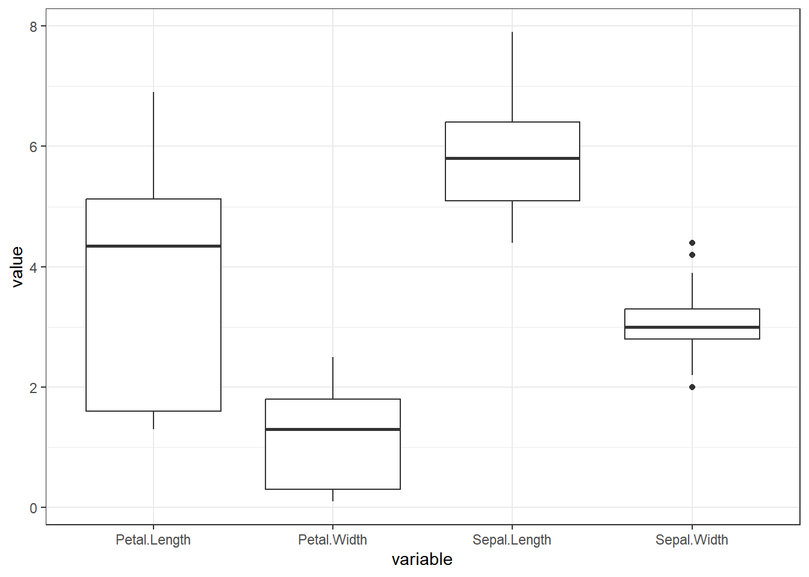
x <- dataset[, 1:4]
y <- dataset[, 5]
# featurePlot(x = x, y = y, plot = "ellipse") # does not work
library(ggforce)
ellipse_plot <- function(data, x, y, group) {
ggplot(data, aes({{ x }}, {{ y }}, fill = {{ group }})) +
ggforce::geom_mark_ellipse() +
geom_point()
}
ellipse_plot(dataset, Sepal.Length, Sepal.Width, Species)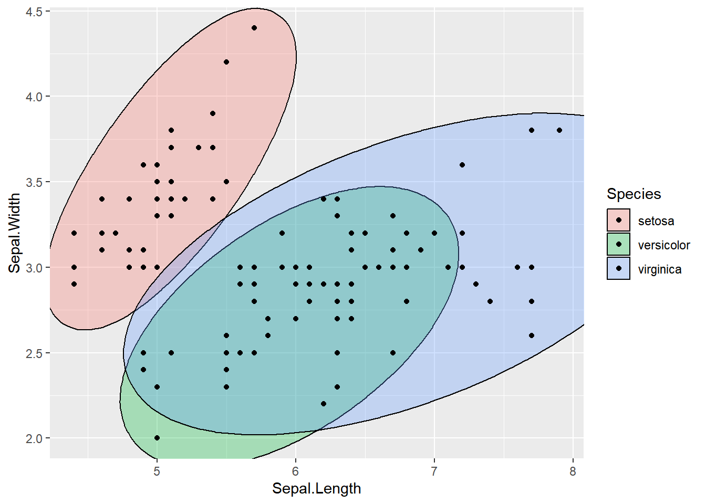
ellipse_plot(dataset, Sepal.Length, Petal.Length, Species)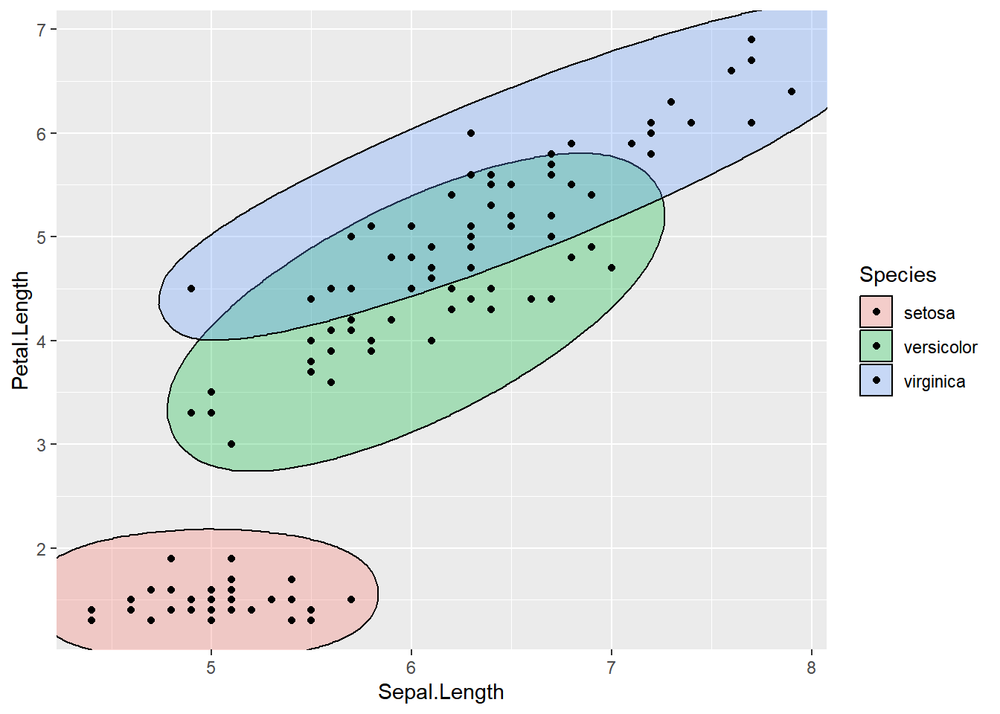
ellipse_plot_str <- function(data, x, y, group) {
ggplot(data, aes(x = .data[[x]], y = .data[[y]], fill = .data[[group]])) +
ggforce::geom_mark_ellipse() +
geom_point() +
theme_bw()
}
attr <- names(dataset[, 1:3])
attr <- set_names(attr)
ellipse_plots <- map(attr, ~ellipse_plot_str(dataset, .x, "Petal.Width", "Species"))
walk(ellipse_plots, print)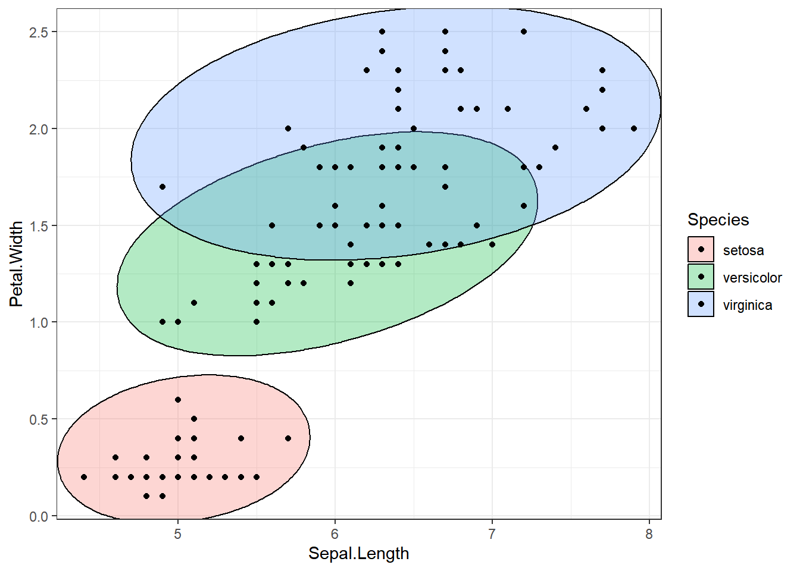
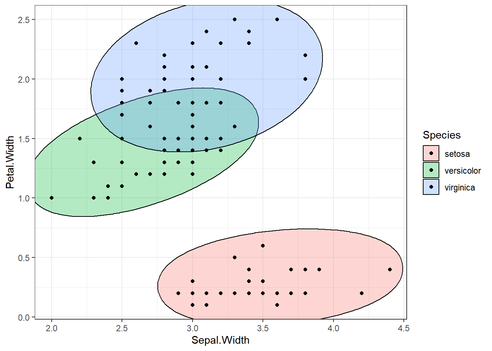
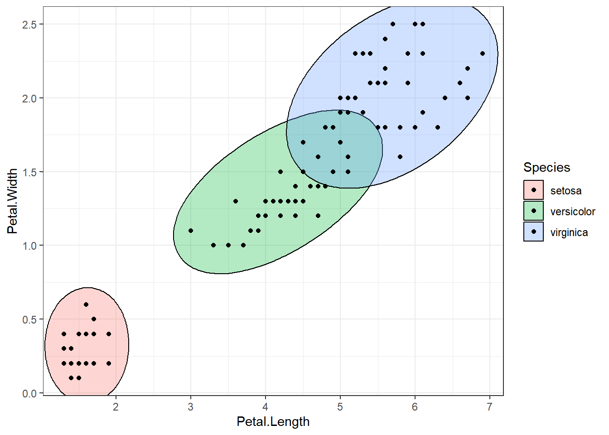
featurePlot(x=x, y=y, plot="box")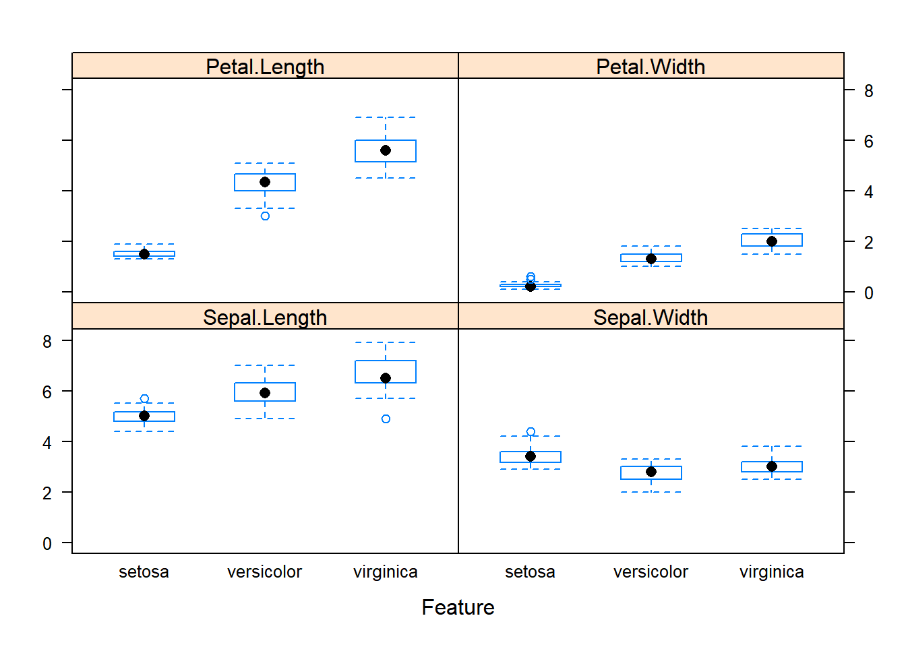
dataset %>%
pivot_longer(cols = -Species, names_to = "variable", values_to = "values") %>%
ggplot(aes(Species, values)) +
geom_boxplot() +
facet_wrap(~variable, scales = "free_y") +
theme_bw()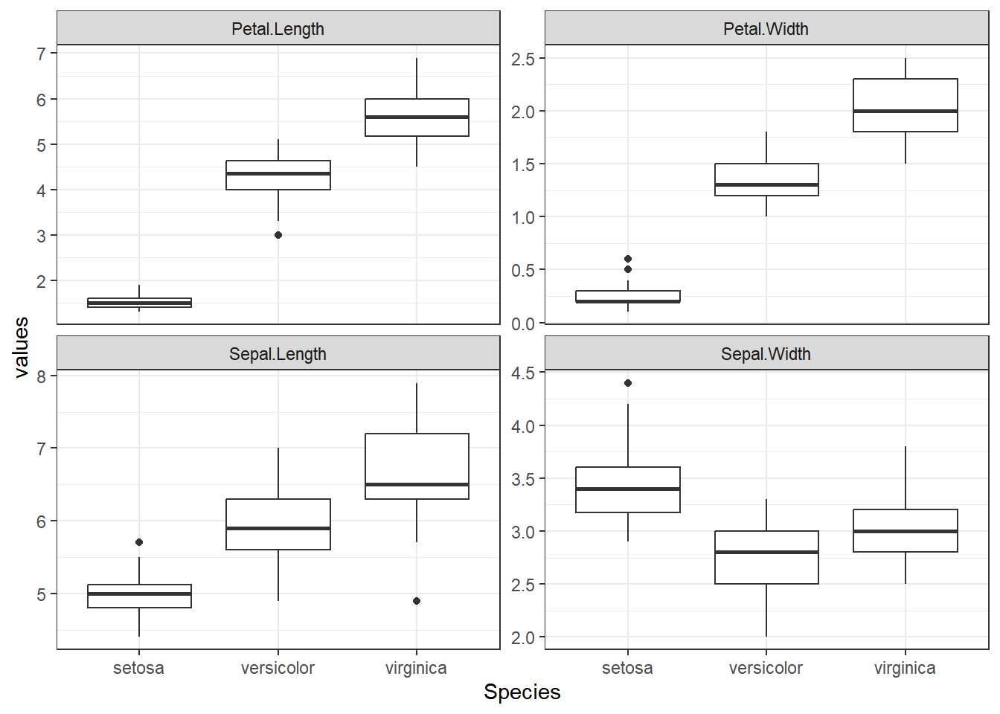
# density plots for each attribute by class value
scales <- list(x=list(relation="free"), y=list(relation="free"))
featurePlot(x=x, y=y, plot="density", scales=scales)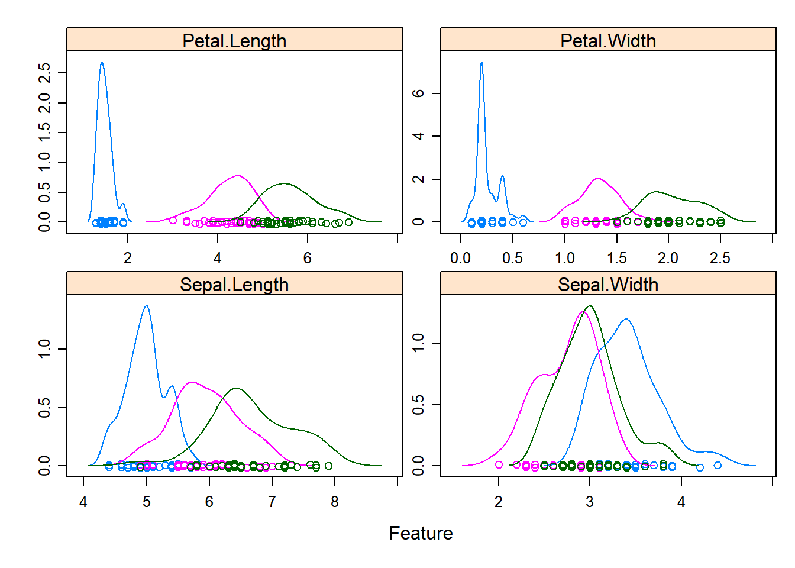
dataset %>%
pivot_longer(cols = -Species, names_to = "variable", values_to = "values") %>%
ggplot(aes(values, color = Species)) +
geom_density() +
geom_rug() +
facet_wrap(~variable, scales = "free") +
theme_bw()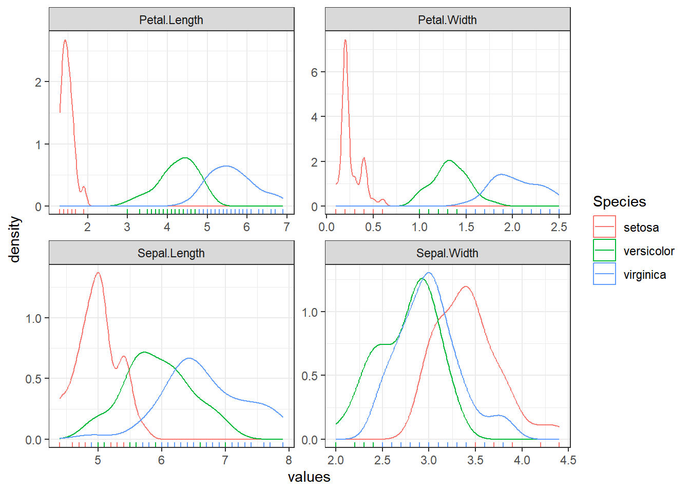
Cross Validation
control <- trainControl(method = "cv", number = 10)
metric <- "Accuracy"Build models
We will consider,
- LDA (linear method)
- CART, knn (simple nonlinear)
- SVM (with linear kernel), RF (complex nonlinear)
# 1. linear algorithms
# lda
set.seed(11)
fit_lda <- train(Species ~ ., data = dataset, method = "lda",
metric = metric, trControl = control)
# 2. nonlinear algorithms
# CART
set.seed(11)
fit_cart <- train(Species ~ ., data = dataset, method = "rpart",
metric = metric, trControl = control)
# knn
set.seed(11)
fit_knn <- train(Species ~ ., data = dataset, method = "knn",
metric = metric, trControl = control)
# advanced
# SVM
set.seed(11)
fit_svm <- train(Species ~ ., data = dataset, method = "svmRadial",
metric = metric, trControl = control)
# Random Forest
set.seed(11)
fit_rf <- train(Species ~ ., data = dataset, method = "rf",
metric = metric, trControl = control)results <- resamples(list(lda = fit_lda, cart = fit_cart, knn = fit_knn,
svm = fit_svm, rf = fit_rf))
summary(results)
Call:
summary.resamples(object = results)
Models: lda, cart, knn, svm, rf
Number of resamples: 10
Accuracy
Min. 1st Qu. Median Mean 3rd Qu. Max. NA's
lda 0.9166667 0.9375000 1.0000000 0.9750000 1 1 0
cart 0.8333333 0.9166667 0.9166667 0.9333333 1 1 0
knn 0.9166667 0.9166667 1.0000000 0.9666667 1 1 0
svm 0.9166667 0.9166667 0.9583333 0.9583333 1 1 0
rf 0.8333333 0.9166667 0.9583333 0.9500000 1 1 0
Kappa
Min. 1st Qu. Median Mean 3rd Qu. Max. NA's
lda 0.875 0.90625 1.0000 0.9625 1 1 0
cart 0.750 0.87500 0.8750 0.9000 1 1 0
knn 0.875 0.87500 1.0000 0.9500 1 1 0
svm 0.875 0.87500 0.9375 0.9375 1 1 0
rf 0.750 0.87500 0.9375 0.9250 1 1 0dotplot(results)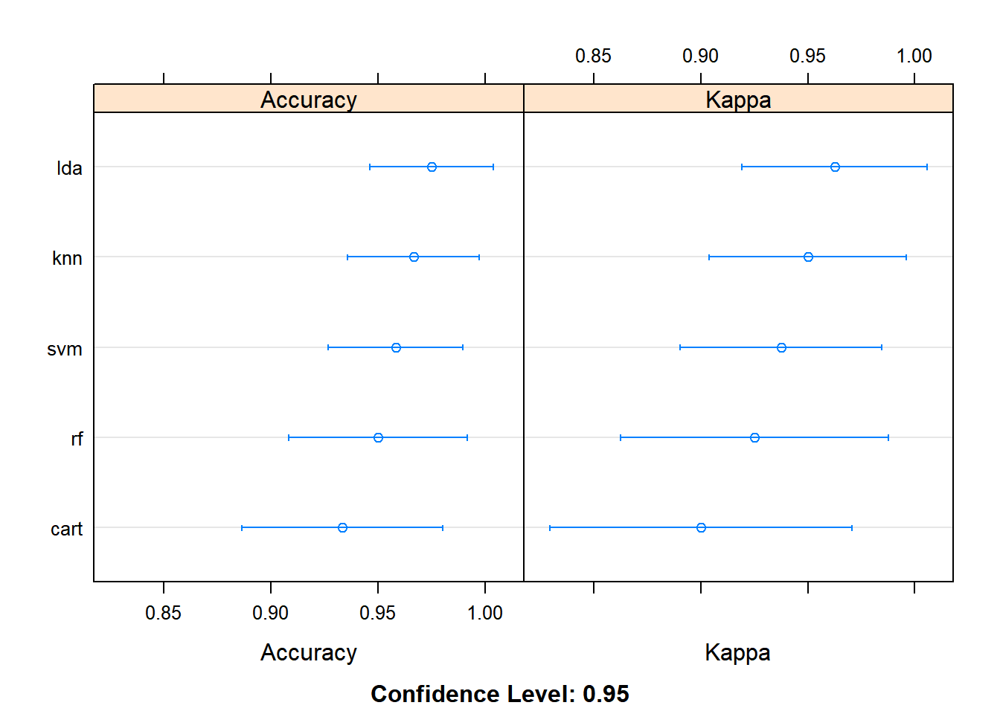
ldais more accurate for this case
print(fit_lda)Linear Discriminant Analysis
120 samples
4 predictor
3 classes: 'setosa', 'versicolor', 'virginica'
No pre-processing
Resampling: Cross-Validated (10 fold)
Summary of sample sizes: 108, 108, 108, 108, 108, 108, ...
Resampling results:
Accuracy Kappa
0.975 0.9625Make predictions
predictions <- predict(fit_lda, validation)
confusionMatrix(predictions, validation$Species)Confusion Matrix and Statistics
Reference
Prediction setosa versicolor virginica
setosa 10 0 0
versicolor 0 10 0
virginica 0 0 10
Overall Statistics
Accuracy : 1
95% CI : (0.8843, 1)
No Information Rate : 0.3333
P-Value [Acc > NIR] : 4.857e-15
Kappa : 1
Mcnemar's Test P-Value : NA
Statistics by Class:
Class: setosa Class: versicolor Class: virginica
Sensitivity 1.0000 1.0000 1.0000
Specificity 1.0000 1.0000 1.0000
Pos Pred Value 1.0000 1.0000 1.0000
Neg Pred Value 1.0000 1.0000 1.0000
Prevalence 0.3333 0.3333 0.3333
Detection Rate 0.3333 0.3333 0.3333
Detection Prevalence 0.3333 0.3333 0.3333
Balanced Accuracy 1.0000 1.0000 1.0000